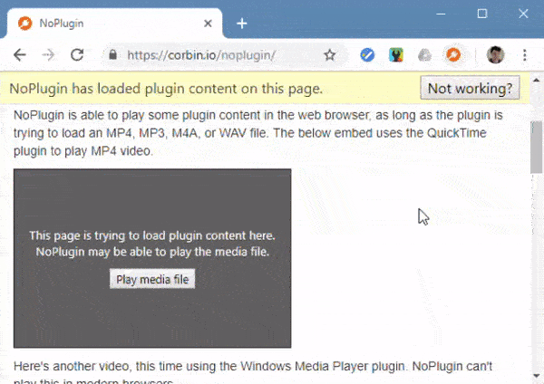
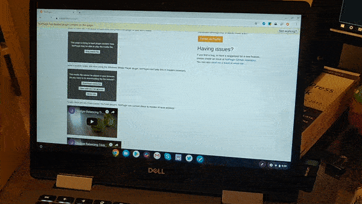

Once upon a time, plugins were required to watch videos, listen to audio, or play games in webpages. However, plugins have proved time and time again to be security risks and the cause of various performance issues. Plugins have been gradually phased out in all web browsers over the past few years, and most sites have switched to HTML5 for playing media.
But what about the millions of pages that will never be updated, like those in the Internet Archive? This is where NoPlugin comes in. NoPlugin is a browser extension for Chrome, Opera, and Firefox that converts some plugin objects into HTML5 media objects for playback in the browser. If your browser isn’t capable of playing the media file in question, NoPlugin can download it to your computer (so you can open it with VLC Media Player or another app).
After a year and a half with no updates, I’m happy to finally release NoPlugin 5.0! This is a massive update that improves performance, media compatibility, and fixes plenty of bugs.
Before this update, NoPlugin determined if the browser could play a certain file by looking at the file ending — .mov, .mp3, and so on. This might seem logical, but many media files are actually containers, with wildly varying video and audio codecs. The file ending doesn’t tell the full story.
Starting with version 5.0, NoPlugin will now attempt to play every plugin media file in your browser. If the media file has a supported video and/or audio codec, it should play. If there’s an error, NoPlugin will offer to download the file to your computer, just as before.

This change in behavior allows many QuickTime files (.mov, .qt) to be played inside the browser, since many QuickTime files use the H.264 video codec with AAC/MP3 audio codecs — all of which are commonly used by HTML5 video in MP4 containers.
For this release, most of NoPlugin’s codebase has been rewritten to use regular JavaScript instead of jQuery. Not only does this slightly improve loading times and overall performance, but it also reduces memory usage. In my testing, NoPluigin 5.0 used around 2/3 the RAM as NoPlugin 4.0.
NoPlugin 5.0 also improves compatibility with pages saved in the Internet Archive Wayback Machine. When loading a page hosted on the Internet Archive, NoPlugin adds the proper Archive web address ( web.archive.org/web/…) to the front of the media URL. This allows many previously-broken media embeds to now work, like this trailer of The Dark Knight on Apple’s website from 2006.
There is still additional work to be done in this area (only the bottom trailer on the above page works), but I’ll save that for the next update.
Chromebooks have always been one of the main focuses for NoPlugin. While you can still use Internet Explorer on Windows to view plugin content, or old builds of Firefox or Chrome on Mac, NoPlugin is the only option for playing plugin content on Chrome OS.
On Chromebooks, NoPlugin 5.0 adds a new ‘Open in VLC for Android’ button to plugin objects that can’t be played in the browser. If your Chromebook has support for Android apps, clicking this button will open the media URL instantly in the Android version of VLC Media Player.

This doesn’t always work, due to some jankiness with Android’s Intent URL scheme, but it’s still a great feature. When it doesn’t work, you still have the option of downloading the file (which can then be played with the Android or Chrome OS versions of VLC Media Player).
NoPlugin 5.0 is rolling out right now on the Chrome Web Store and Firefox Add-ons repository. It’s currenty waiting to be approved for Opera.